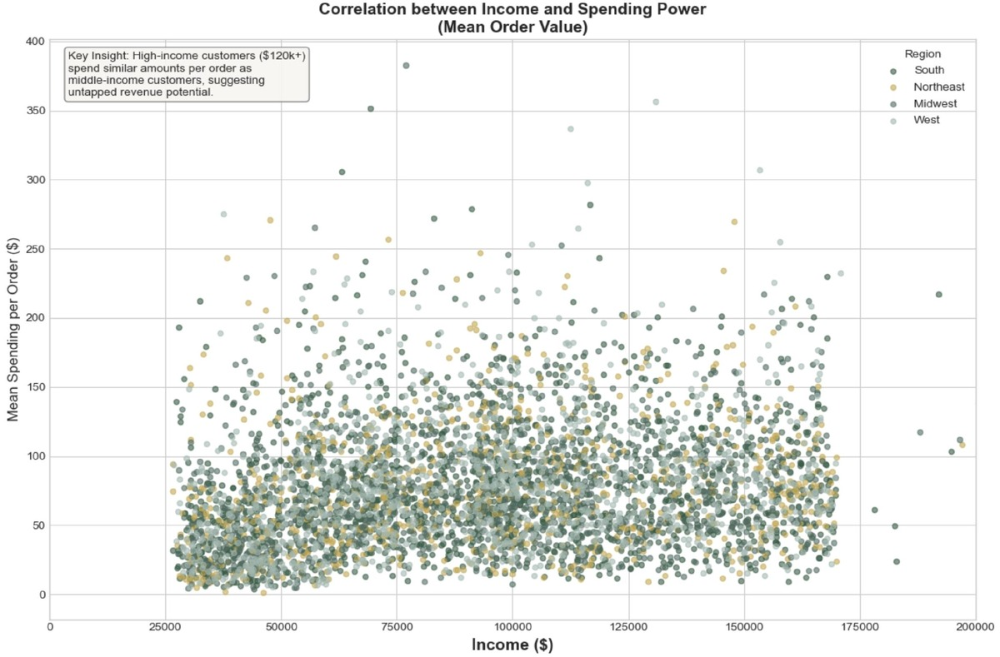
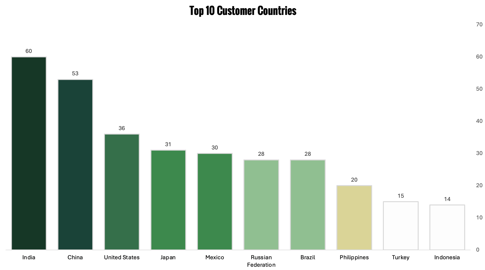

Portfolio
Featured Projects
End-to-end data projects spanning healthcare, e-commerce, streaming, and operations.
Healthcare Analytics
NYC Healthcare Access Equity Analysis
Geospatial analysis of healthcare data across NYC boroughs using regression and clustering to identify access equity gaps in underserved communities.
Python
pandas
scikit-learn
Jupyter
View Case Study →

Customer Analytics
Instacart Customer Segmentation
Cleaned and analyzed 32.4M records across 206K customers to build a segmentation framework identifying high-value personas and revenue patterns.
Python
pandas
NumPy
seaborn
View Case Study →
View GitHub →

Market Intelligence
Rockbuster Revenue & Market Analysis
Wrote complex SQL across a 15-table database to calculate CLV and prioritize markets across 108 countries for a phased streaming launch.
SQL
PostgreSQL
Tableau
View Case Study →
View GitHub →

Workforce Analytics
Influenza Staffing Optimization
Forecasted seasonal staffing demand across 50 states using a population-based risk model (R² = 0.88), integrating CDC mortality and demographic data.
Excel
Tableau
Statistical Modeling
View Case Study →
View GitHub →